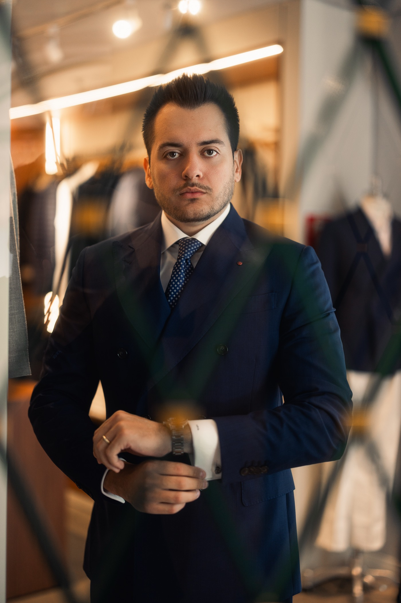

01
Derecho Penal
Defensa en todas las etapas — de la investigación y la detención a los recursos ante los Tribunales Superiores, incluidos el jurado y los delitos económicos.
Ver práctica penal →Derecho Penal y Tributario — São Paulo, Brasil
De la detención en flagrancia a los Tribunales Superiores. De la liquidación fiscal al CARF.
Guardia 24 horas para detenciones y urgencias




Urgencias penales
Tras una detención en flagrancia, la audiencia de custodia se realiza dentro de las 24 horas — y es allí donde se discute la libertad. Contar con defensa técnica desde el primer momento cambia el rumbo de todo el proceso. Nuestra guardia atiende a cualquier hora, todos los días. Un abogado orienta a la familia, acompaña el registro de la detención y actúa de inmediato en la audiencia de custodia.
Áreas de práctica
Derecho penal y tributario con profundidad técnica — y dominio de la intersección entre ambos.
Defensa en todas las etapas — de la investigación y la detención a los recursos ante los Tribunales Superiores, incluidos el jurado y los delitos económicos.
Ver práctica penal →
Planificación fiscal, recuperación de créditos, acuerdos de pago estratégicos y litigio administrativo y judicial — incluido el CARF.
Ver práctica tributaria →
Defensa penal de extranjeros en Brasil, con atención en español e inglés. Despacho incluido en la lista de abogados de la Embajada de EE.UU.
Clientes internacionales →Derecho Penal Económico
Las liquidaciones y ejecuciones fiscales pueden evolucionar a acusaciones de delitos tributarios, lavado de dinero y delitos contra el sistema financiero. Pocos despachos están preparados para jugar en los dos tableros a la vez.
Es exactamente en esa intersección donde el despacho concentra su especialización: posgrado en Derecho Penal Económico (FGV/SP), formación en Finanzas (PUC/RS) y actuación simultánea en litigio tributario y defensa penal corporativa.
En la prensa
La actuación del despacho en casos de repercusión, registrada por la prensa.

Conversaciones revelan una relación abusiva entre acusado y víctima. João Marcos comenta el caso como abogado defensor.
Ver →
Mensajes sugieren premeditación. La defensa comenta la investigación en vivo.
Ver →
Cabrini reconstruye el caso y entrevista al acusado junto a la defensa.
Ver →
Serie documental sobre crímenes reales. El despacho participa como defensa en el caso.
Ver →
Reportaje con historias de las víctimas. João Marcos actúa como abogado de los afectados.
Leer nota →
Cobertura de G1 y TV Globo sobre el caso, de la investigación al juicio. El despacho actuó en la defensa.
Leer nota →Análisis sobre la tipificación del autolavado en el derecho penal económico.
Leer nota →Nota sobre la participación del despacho en la defensa en una investigación de gran repercusión.
Leer nota →Todas las noticias →Equipo
Un equipo dedicado exclusivamente al derecho penal y tributario, liderado por João Marcos A. Batista.
Preguntas frecuentes
Contacte a un abogado de inmediato y no permita declaraciones sin defensa presente. La audiencia de custodia ocurre dentro de las 24 horas y es el primer momento en que puede discutirse la libertad. Nuestra guardia orienta a la familia desde el primer contacto.
La liquidación puede impugnarse en vía administrativa — incluso ante el CARF — y judicial. En muchos casos el pasivo puede reducirse, fraccionarse o compensarse con créditos. Lo esencial es actuar dentro de los plazos de defensa.
Sí. Actuamos en todo Brasil, incluidos los Tribunales Superiores en Brasilia. La primera consulta puede hacerse por videollamada o WhatsApp.
Sí. El despacho integra la lista de abogados de la Embajada de EE.UU. en Brasil y atiende en español, portugués e inglés, incluido el contacto con familiares en el exterior y oficinas consulares.
El caso se analiza con absoluta confidencialidad y el cliente recibe una evaluación honesta de los riesgos y estrategias posibles, con honorarios definidos de forma transparente antes de cualquier contratación.
Contacto
Neo Corporate Offices
Rua Enxovia, 472 — conj. 1504 e 1505
Brooklin, São Paulo/SP · 04711-030